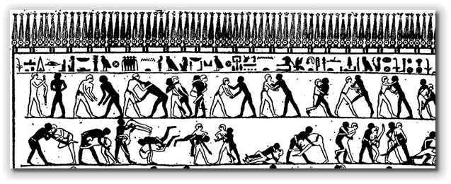
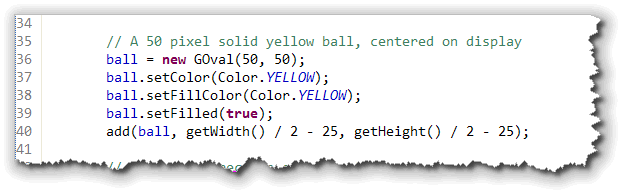
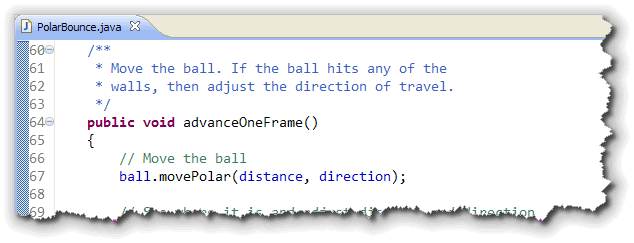

Learning how to handle events,
which you'll do in the next section, will let you create
interactive GUI programs that respond to user input.
Animation, the topic of this section, will let you
write programs that are visually exciting.

And, when you combine interactivity and animation, you'll have everything you need to create your own video game empire.So, just what is animation? Here's a description from the JTF tutorial, along with a couple of illustrations from Wikipedia.
 In computer graphics, the process of updating a graphical
display so that it changes over time is called animation.
Implementing animation typically involves displaying an initial
version of the picture and then changing it slightly over time
so that the individual changes appear continuous from one
version of the picture to the next.
In computer graphics, the process of updating a graphical
display so that it changes over time is called animation.
Implementing animation typically involves displaying an initial
version of the picture and then changing it slightly over time
so that the individual changes appear continuous from one
version of the picture to the next.
 This strategy is analogous to classical film animation in which
cartoonists break up the motion of the scene into a series of
separate frames. The difference in time between each frame is
called a time step and is typically very short. Movies, for
example, typically run at 30 frames a second, which makes the
time step approximately 33 milliseconds.
This strategy is analogous to classical film animation in which
cartoonists break up the motion of the scene into a series of
separate frames. The difference in time between each frame is
called a time step and is typically very short. Movies, for
example, typically run at 30 frames a second, which makes the
time step approximately 33 milliseconds.
If you want to obtain smooth motion in Java, you need to use a time step around this scale or even faster.
ACM Graphics Animation
Let's start out by writing the traditional bouncing ball program. Unlike the short GIF animation from Wikipedia, the traditional bouncing-ball program is more like looking down on a ball bouncing around a billiards table, assuming that there is no gravity or friction to slow things down.
Even though it's simple, I still get kind of excited when
I see the ball start bouncing! To make things a little more
interesting, instead of changing the x and
y coordinates of the ball separately, we'll make
use of the ACM GObject method movePolar()
and write our code in terms of direction and
distance.
Polar Coordinates?
 What are polar coordinates? Here's an explanation
from Wikipedia.
What are polar coordinates? Here's an explanation
from Wikipedia.
In mathematics, the polar coordinate system is a two-dimensional coordinate system in which each point on a plane is determined by an angle and a distance.
The polar coordinate system is especially useful in situations where the relationship between two points is most easily expressed in terms of angles and distance; in the more familiar Cartesian or rectangular coordinate system, such a relationship can only be found through trigonometric formulation.
Of course, that's just what we need to model our bouncing ball!
The Basic Structure
The basic structure for every animation program that
uses the ACM class libraries is always the same:
 Here's what the parts do:
Here's what the parts do:
- Instance variables: the objects that you're going to move need to be defined as instance variables, since you'll interact with them inside several different methods. You'll also normally initialize the frame rate, as I've done here: 20 milliseconds means that the animation will be drawn at around 50 frames per second.
- Initialization: the
init()method is used to set up the initial state of your objects, and to initialize the parameters for your animation, such as speed and direction. - Running: the
run()method is used to animate the program. Usually, however, you'll use exactly the same version of the method, which consists of an endless loop. The real work of animating the objects is done inside youradvanceOneFrame()method. Thepause()method is used to make sure that the frame stays on screen for a certain amount of time. - Draw a Frame: the
advanceOneFrame()method is responsible for moving each of the animated objects, and adjusting their state (such as speed or direction) as necessary.
Not shown here is the main() method. As you recall,
every ACM program has a main() method that creates
an instance of your program and then starts that instance
running. I've left it out of this illustration because it
doesn't directly have to do with the animation.
Now, let's look at each of these in terms of our PolarBounce program. You can find the source code in this chapter's code folder. Go ahead and open it in DrJava.
Instance Variables
Here are the instance (or program-wide) variables used in
PolarBounce:
 Notice that:
Notice that:
- A
GOvalobject is used for the ball that will be bounced around the screen. - Both the distance the ball travels and the direction
(as a polar angle between 0 and 360 degrees) are
represented as
doublevariables.
As with the "skeleton" code, the frame time is defined as a constant integer. Remember that twenty milliseconds will result in a nominal fifty-frames-per-second animation.
Initialization
The first part of the initialization method initializes the
screen itself:
 In addition to setting the background color to black,
I added a
In addition to setting the background color to black,
I added a JLabel to the top panel, so that
the user knows to kick off the animation by clicking the
mouse. (You'll learn about this shortly in Section 8.6—Meet
the Widgets.)
The next part to be initialized is the ball itself. I want
a 50-pixel solid yellow ball:

After the ball is created, its added to the center of the screen. The last part to be initialized is the direction and
distance:
 I've used random numbers to initialize both of these values.
To start with a random direction, I initialized that to
a value between 0 and 360. To make sure that the ball is always
moving, even if slowly, I used an expression that will always be
between 2 and 12.
I've used random numbers to initialize both of these values.
To start with a random direction, I initialized that to
a value between 0 and 360. To make sure that the ball is always
moving, even if slowly, I used an expression that will always be
between 2 and 12.
Running
The running loop is almost exactly like the one
I showed you in the animation skeleton earlier:
 The only difference is the use of the ACM
The only difference is the use of the ACM waitForClick()
method before entering the loop. You can call this method without
activating any of the other event-handling steps you'll meet
in the next section.
Advancing the Frame
To animate the ball, we need to:
- move it,
- and then check for the results.
If our move results in a collision with either the walls (on the sides) or the floor or ceiling, then we need to adjust the direction in which we're moving in anticipation of the next frame, coming up 20 milliseconds from now.
The code to move the ball is pretty straightforward; it just
uses the movePolar() method as I discussed before:

To see if we "hit the wall", the calculations are a little
easier to read, if we create variables for the left, top, right
and bottom edges of the ball. You can write the code without
these extra variables, but then your Boolean conditions are
a little "noisy":

With the variables, the conditions are pretty simple. If you've
hit the left wall (left < 0) or the right
wall (right >= getWidth()), then you need
to adjust the angle by subtracting the current directions
from 180:
 Of course that means you may end up with a negative angle
(when the current direction is greater than 180), but the
Of course that means you may end up with a negative angle
(when the current direction is greater than 180), but the
movePolar() method is smart enough to handle
that, and automatically adds 360.
When you hit the floor or the ceiling, you perform a similar calculation, only instead of subtracting from 180, you subtract from 360.
Try It Yourself
Let's make a couple of changes. Instead of a 50-pixel yellow ball,
let's change that to a 20-pixel red ball. Also, when the ball hits
the side walls, speed it up a little and when it hits the top and
bottom walls, slow it down. You can click here to see how if
you get stuck.


Introducing Animation Summary
- Animation is the appearance of motion implemented by making small changes to the position, size or color of a component at a very rapid rate, typically 20 or 30 times each second.
- In ACM graphical programs, the generic skeleton for an
animated program involves creating the components to
be animated as instance variables and then adding an
animation loop to the
run()method. This loop calls a method which modifies the state of the animated objects and then pauses for a fixed time, while the screen is repainted.